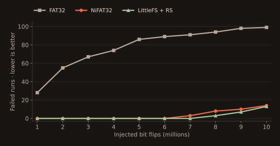
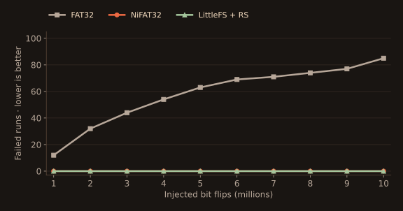
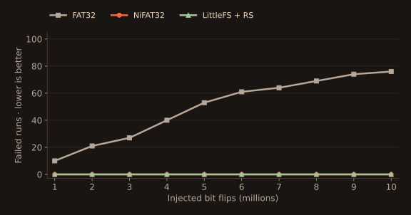
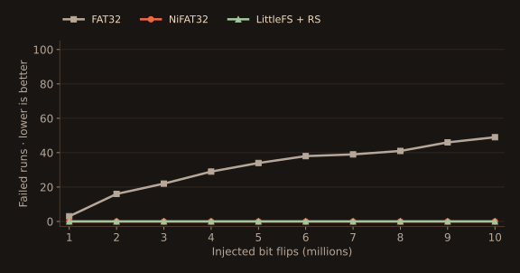
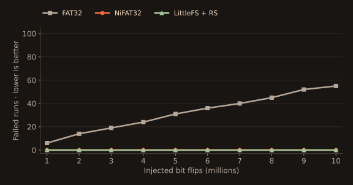

Spread the risk.
Metadata copies are scattered across the volume. A localized scratch is less likely to hit them all.
Explore the layout+ EMBEDDED STORAGE. EXTRA RESILIENCE.
A fault-tolerant filesystem for embedded systems.
FASTER THAN LITTLEFS
14 vs 13 failed runs · 100 MB / 10M bit flips
5–5–5 copies · caches & indexing off
THROUGHPUT
5–5–5 copies · no caches or indexing. Select a filesystem to compare all six operations.
RELATIVE THROUGHPUT
LittleFS = 1× · higher is faster
FAT32 = 1× · higher is faster
YAFFS2 = 1× · higher is faster
DEFENSE IN DEPTH
A flipped bit shouldn't end the story.
NiFAT32 combines independent protection layers to keep filesystem metadata recoverable.
Metadata copies are scattered across the volume. A localized scratch is less likely to hit them all.
Explore the layoutHamming encoding corrects single-bit errors. Checksums help identify untrusted metadata copies.
Meet the protection layersRedundant FAT and journal copies vote on reads. Disagreeing values are repaired from the winning copy.
Watch recovery happenBREAK A BIT. KEEP THE DATA.
Here's a simplified five-copy vote. Corrupt one copy, then let the other four recover the original value.
Try Hamming decoding, journal replay, and larger upsets in the interactive walkthroughs.
METADATA PROTECTION
Spaced copies. Software correction. Majority repair.
Recover damaged metadata from redundant copies.
Hamming coding corrects single-bit metadata errors in software.
Separate critical copies to reduce their exposure to one local event.





Failed mount or file access. Payload integrity excluded. Lower is better.
FIT YOUR FIRMWARE
Minimum: 6,767 B ROM, 856 B RAM, read-only.
Default: includes a 500 KiB allocator pool.
x86-64 · GCC 15.2.1 · static RAM excludes stacks and external allocation.
All 16 measurements & build flags →FROM FIRST BUILD TO FLASH
READY WHEN YOU ARE
Build the tools, format an image, and open the interactive Unix shell.
Read the setup guide# Build the formatter and Unix utility
make tools
# Create a default 64 MB volume
./formatter/formatter -o nifat32.img
# Mount and explore
./builds/unix_nifat32 nifat32.img 64 512 5 2A familiar API. A different disk format. NiFAT32 images aren't wire-compatible with standard FAT32. Access them through this library or compatible firmware. Footprint & build flags.